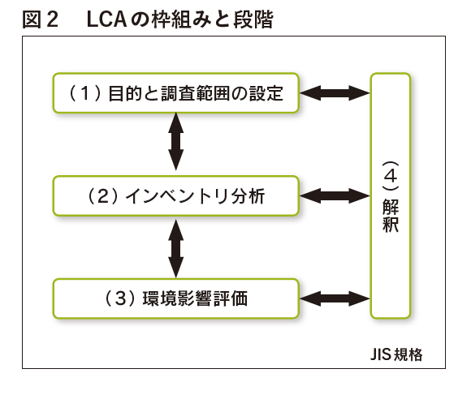
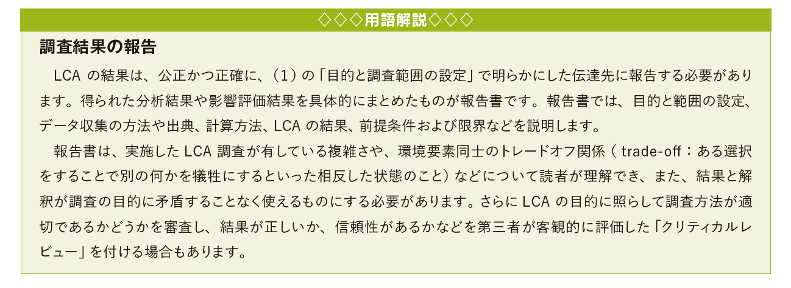

◆LCAの手順

LCAの基本的な枠組みと段階については、国際標準化機構(International Organization forStandardization：ISO）＊1の定める ISO14040（環境マネジメント－ライフサイクルアセスメント－原則及び枠組み）では、図２の4段階により行うと規定されています。
LCA の結果や解釈は、報告書として公開するほか、製品の研究開発や改善、新企画、公共政策の立案、マーケティングなどに活用することが考えられます。
次にそれぞれの段階でどのようなことを行うかを具体的にみていくことにしましょう。
（1）目的と調査範囲の設定
まず LCA の目的と調査範囲を設定します。この設定の仕方によって調査の方法や内容が変わってくるので、慎重に設定する必要があります。具体的には次の作業を行います。
• 調査をする理由を明らかにし、「製品機能」を特定する
• 調査結果を誰に伝え、どのように利用するか（用途）を明らかにする
• 「目的」に従い、「システム境界」（対象とするプロセス全体を含む自然界との境界）を区分する
図3はプラスチック製品におけるシステム境界の例です。原油などの天然資源の原料採掘から、資源輸入、原料樹脂加工、加工製品製造を経て、有効利用・単純焼却・埋立の範囲とし、LCA の調査範囲は、システム境界に入ってくる「入力」（ input：インプット）から、出ていく「出力」（ output：アウトプット）までとします。
（2）LCI（インベントリ分析）
調査対象のシステムに関連する入力と出力のデータ収集を LCI（ Life Cycle Inventory：インベントリ分析）といいます。
インベントリ分析では、ライフサイクルの各段階における材料使用量、エネルギー消費量、環境負荷物質排出量、廃棄物量などに関する入力項目と出力項目のデータを収集し、計算します。
表１は、入力・出力項目の例を示したものです。これらのデータはLCAを実施するための基礎となるものであり、LCA 評価を正しく行うには、定性的・定量的なインベントリデータを的確に収集することが求められます。
（3）影響評価
インベントリ分析のデータを利用して、製品に関わる「目に見える部分」、「目に見えない部分」の影響を評価します。この過程ではインベントリデータと特定の影響との関連づけを行い、それらの影響を理解します。評価内容の詳細度や評価手法の選択は、LCAの目的と調査範囲によって異なります。
影響評価の方法については複数の評価方法が開発され、インベントリデータを特定の影響と正確に関連づける方法が確立されていないため、LCA に主観的要素が入ってしまうこともありえます。したがって、報告書などにはそのことを前提条件として明記し、可能な限り透明性を保つよう努めなければなりません。
（4）結果の解釈
解釈では、結論や提言を導き出すために、インベントリ分析および影響評価の各段階の結果を調査の目的に照らして評価します。（ 3 ）の影響評価と同様に、結果の解釈についても確立した方法論は存在していません。このため、「製品 A は製品 B と比べて環境負荷が大きい／小さい」といった比較評価のために調査結果を外部で使用するにあたっては、その分野の専門家からなる第三者に調査結果の正当性を客観的に検証してもらう必要があります（ Critical Review：クリティカルレビュー）。解釈で得られた情報は、製品の研究開発・改善や、企画、公共政策、市場開発など、さまざまな用途に活かすことができます。
＊1 ：国際標準化機構 国際的標準である国際規格 IS （International Standard）を策定するための非政府組織